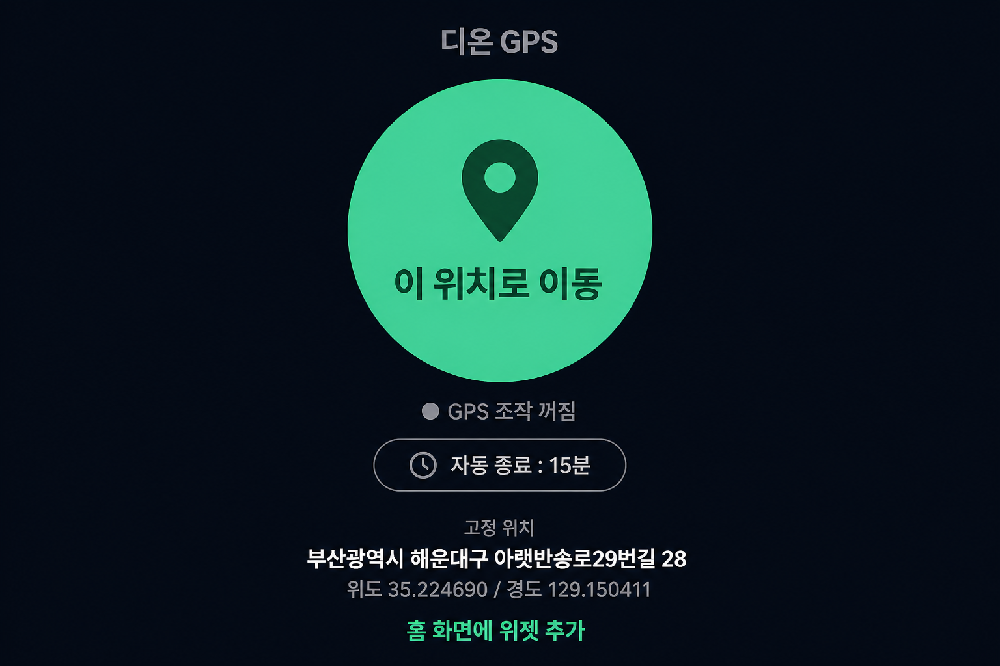
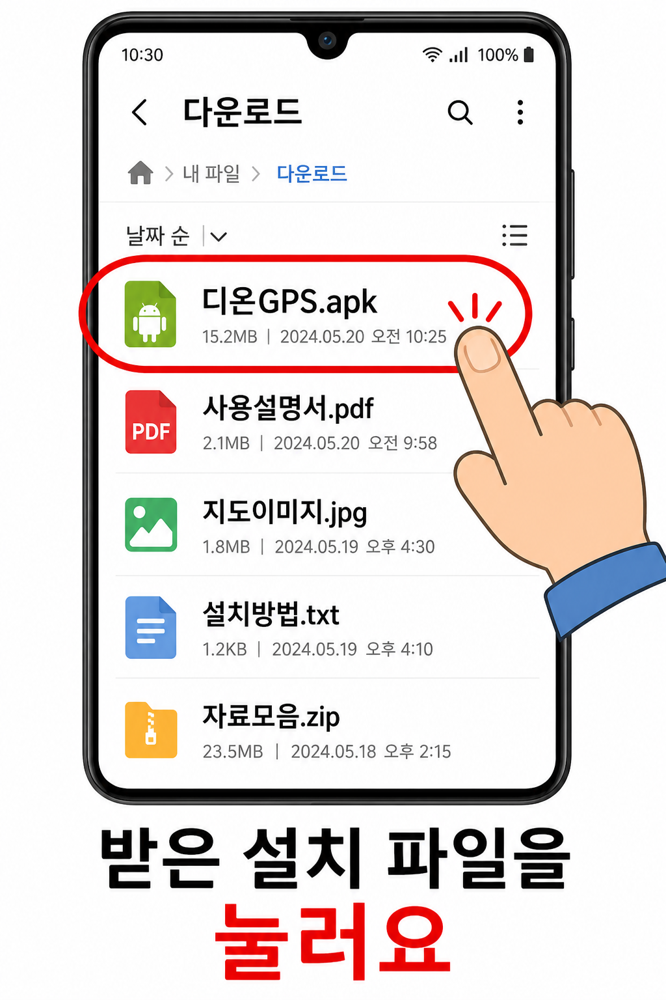
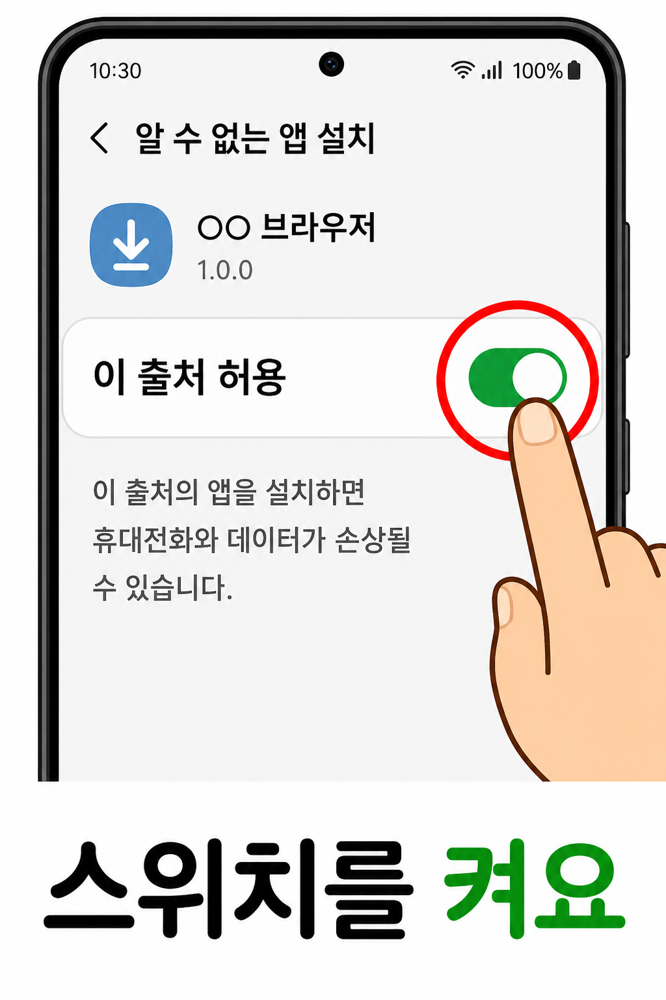
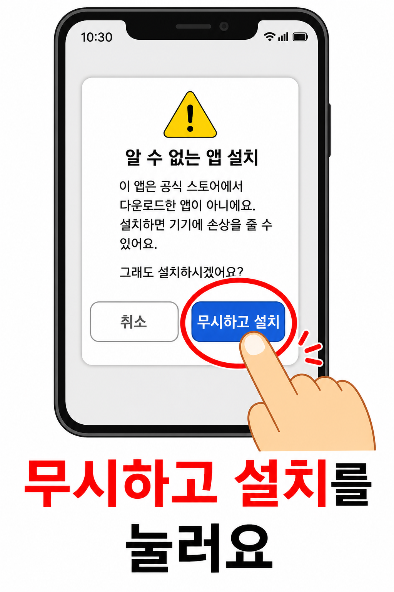
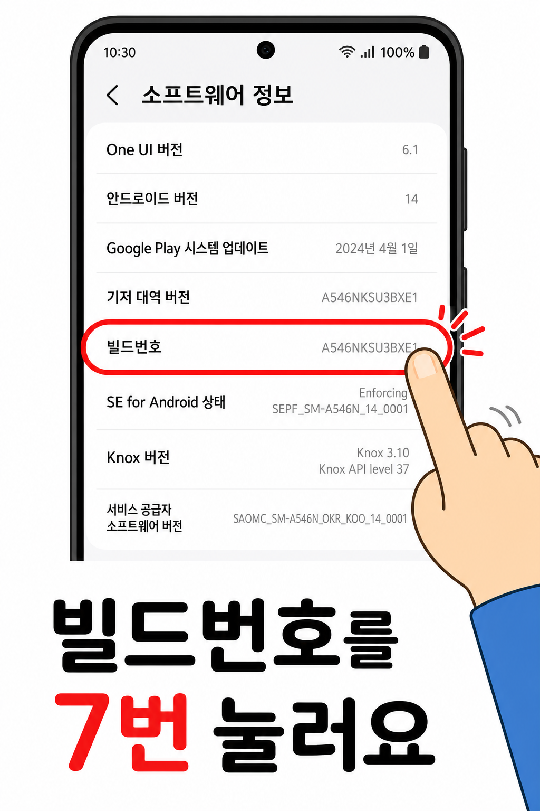
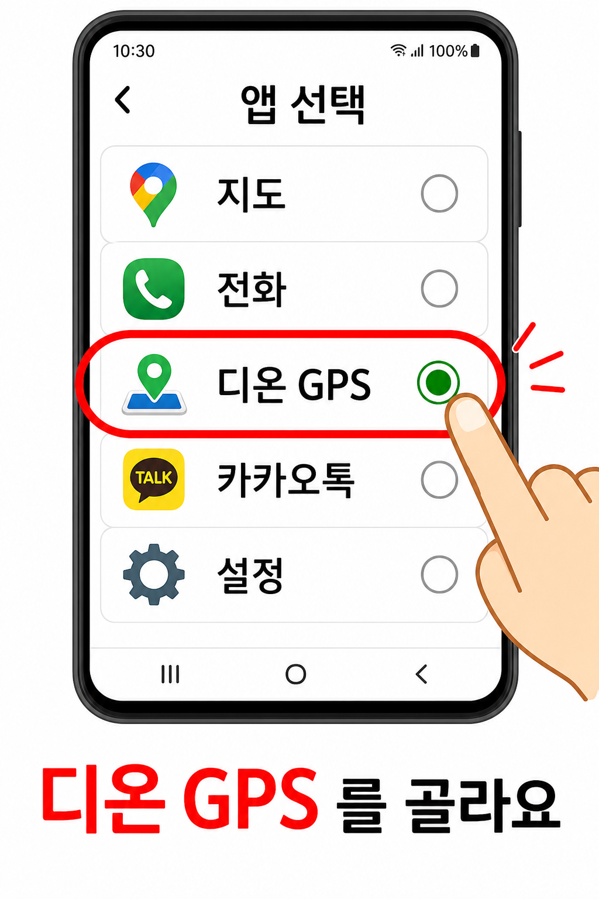
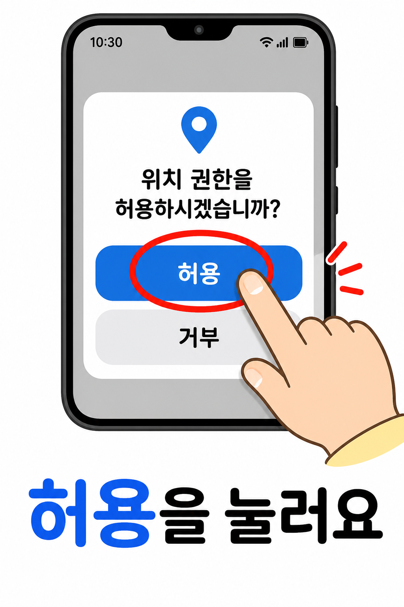

1설치 파일 열기
- 휴대폰에서 받은
디온GPS.apk파일을 손가락으로 누릅니다. - 파일은 보통 내 파일 → 다운로드 폴더에 있습니다.

디온 GPS는 화면 가운데의 큰 버튼을 한 번 누르면 내 휴대폰 위치를 정해진 장소로 바꿔주는 앱입니다.
그림을 보면서 위에서부터 순서대로 따라 하시면 됩니다. 약 5분이면 끝납니다.
디온GPS.apk (카카오톡·문자·이메일 등으로 받은 파일)
디온GPS.apk 파일을 손가락으로 누릅니다.

설치만 하면 아직 위치가 바뀌지 않습니다. 아래 설정을 한 번만 해두면 됩니다.



| 가운데 큰 버튼 | 한 번 누르면 정해진 위치로 바뀝니다(초록색). 다시 누르면 꺼집니다. |
|---|---|
| 자동 종료 | 시간을 정해두면(5분~1시간, 직접 입력도 가능) 그 시간 뒤 저절로 꺼집니다. |
| 남은 시간 | 자동으로 꺼질 때까지 남은 시간이 화면에 보입니다. |
| 홈 화면 위젯 | 위젯을 놓으면 앱을 열지 않고 홈 화면에서 바로 켜고 끌 수 있습니다. |
| 위치가 안 바뀌어요 | 5번에서 디온 GPS가 선택됐는지 확인하고, 지도 앱을 껐다 켜 보세요. |
|---|---|
| 목록에 디온 GPS가 없어요 | 앱을 한 번 실행한 뒤 다시 "모의 위치 앱 선택"을 열어 보세요. |
| 설치가 안 돼요 | 2번의 "이 출처 허용"이 켜져 있는지 확인하세요. |